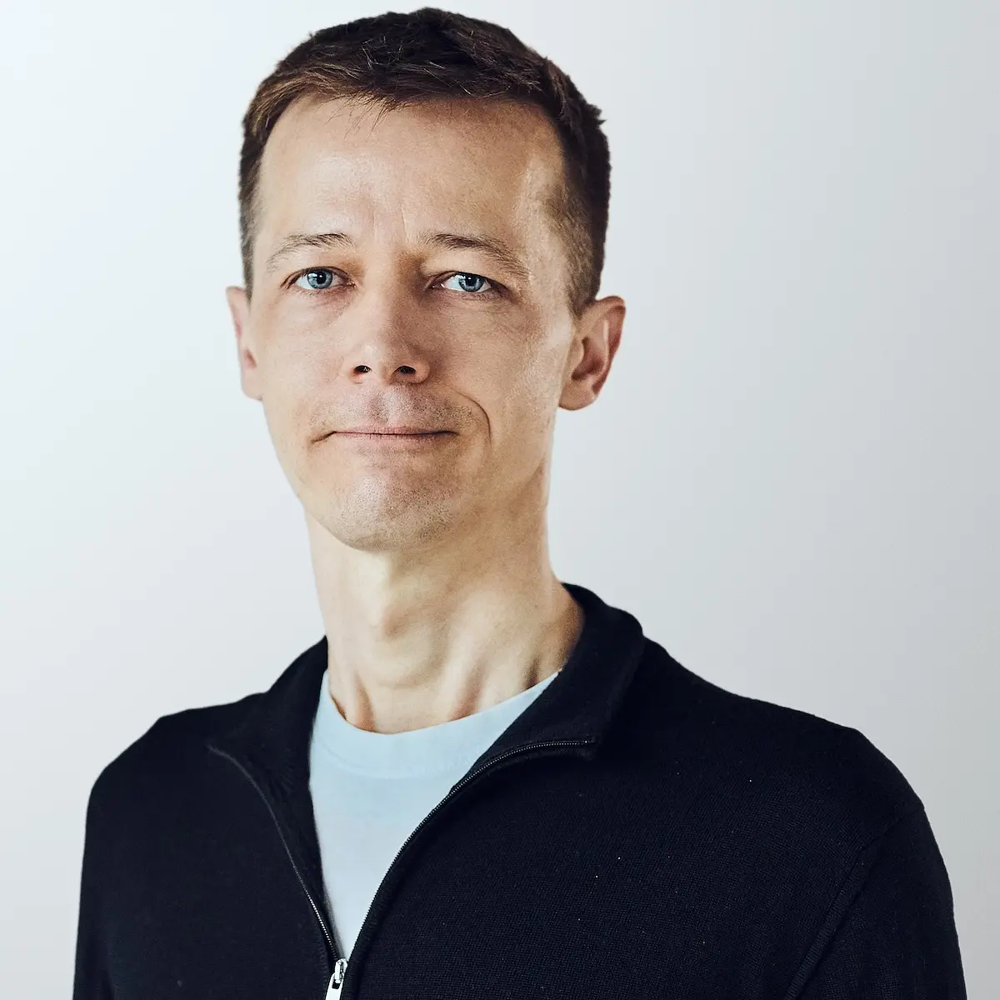
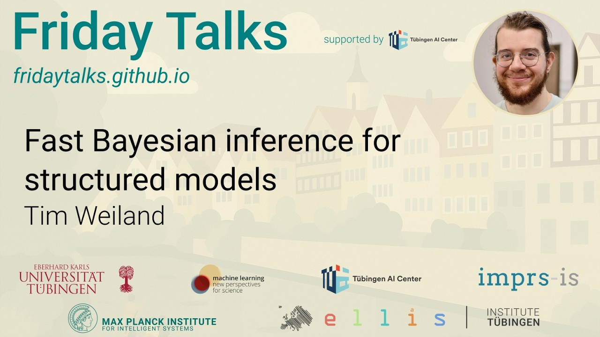
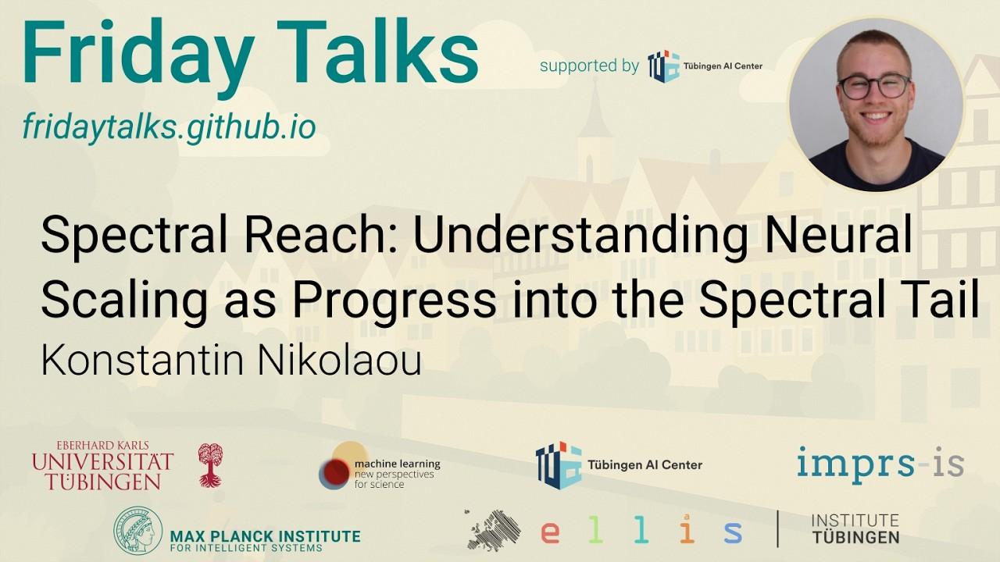
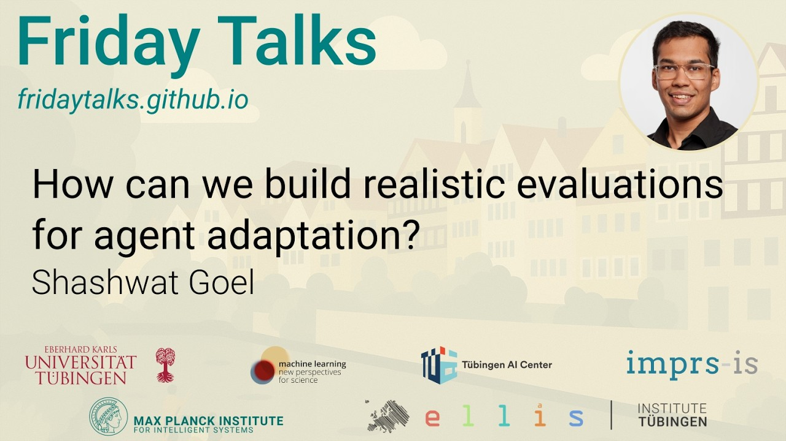
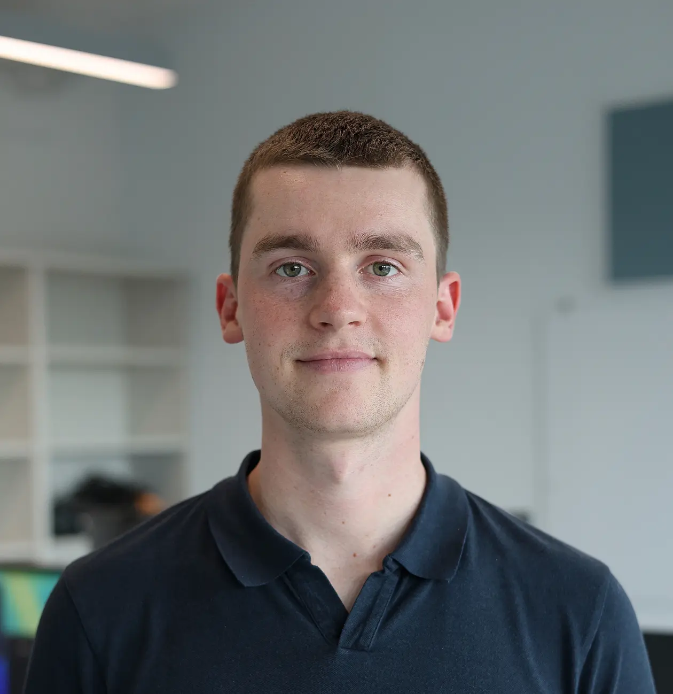
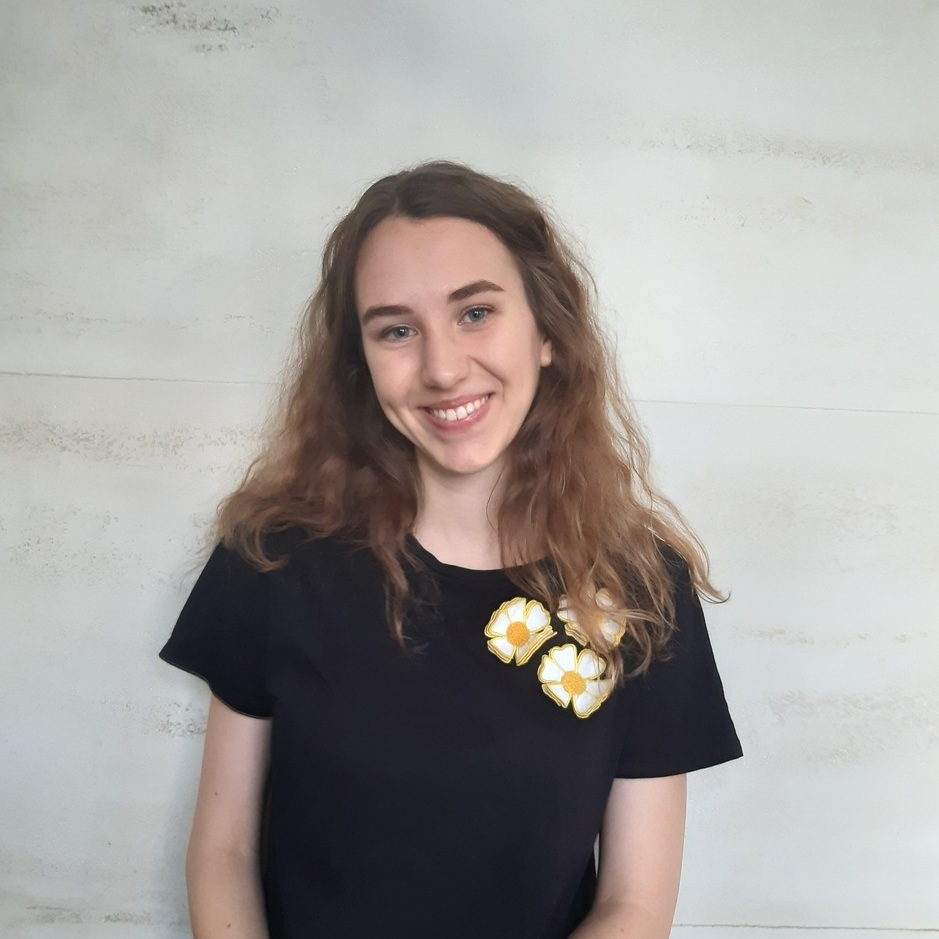
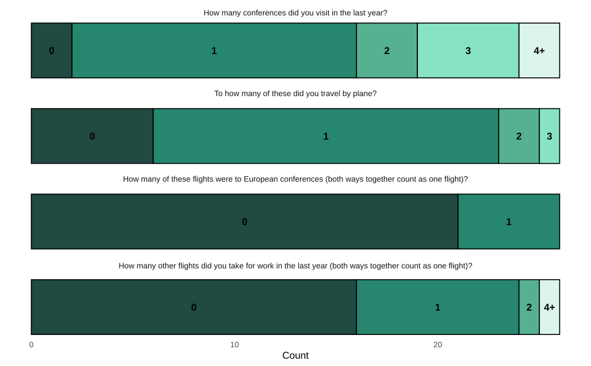
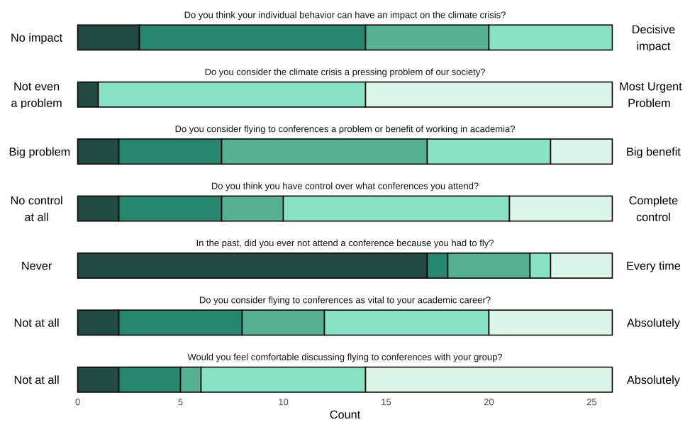
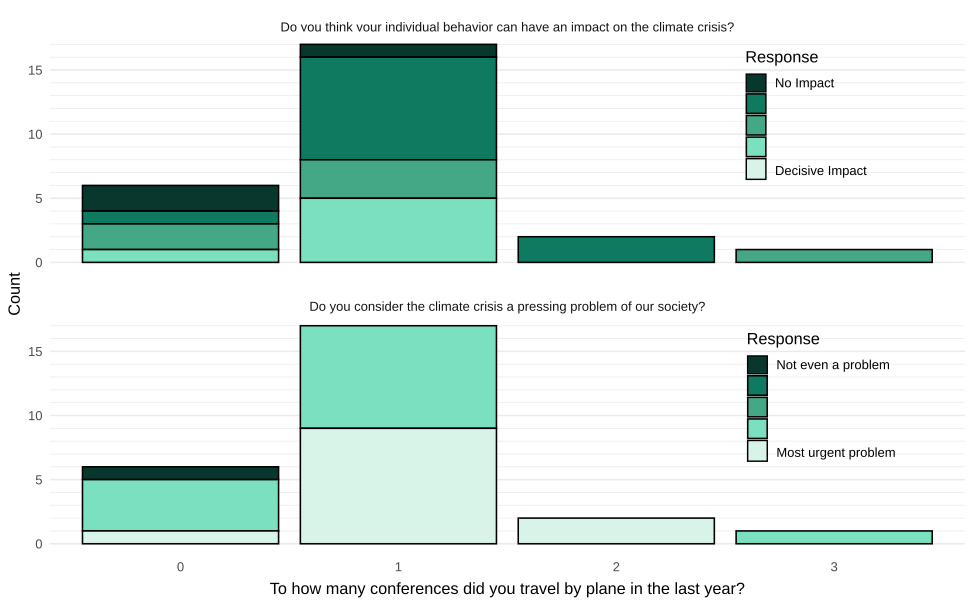

Zuckerbäck ★
- Many options are vegan
- House-made ice cream
- Rare flavours
- Delicious
- Expensive
- Rarely open when you need it
- Relatively small selection of flavours
- Small portions
The magazine of the Tübingen AI PhD & postdoc community — interviews, research, community life and the occasional survey.
Philipp Hennig on the detour from physics, computation as inference, and why “everything is AI” and “no good jobs for AI PhDs” cannot both be true.
Read the interviewWelcome to the first issue of TAPPAS, a grassroots magazine about the people who make Tübingen's AI community what it is.
We live in a world overflowing with information. We have grown used to the daily drumbeat of big news and big events — another model release, another benchmark falling to superhuman performance. While our attention is pulled toward these distant narratives, it is easy to lose sight of what is right beside us, just as rich and just as alive. Tübingen has its share of newsletters and announcements, but one thing has always seemed missing: attention to the concrete nearby — to everyday life, to people, to living itself. Research is our shared passion, and precisely for that reason it should be woven into a life, not lifted out of one and celebrated on its own. It is this life around and between the research — the people and stories of Tübingen AI — that we hope this magazine will record, share and pass around: once a quarter, by us and for us.
The magazine is carried by TAPPA, the association of Tübingen's AI PhDs and postdocs that exists to connect people across labs and institutes, and is open to all. Everything in this issue was written, photographed, surveyed and taste-tested by people you can run into at MvL and Max Planck Ring. And we warmly welcome contributions to our future issues: a piece, an interview, a photo, a rant, a puzzle. Find us in #tappa-quarterly on Slack, or through the feedback form at the back.
So: read, cast your vote for the photo of the quarter, disagree with the ice-cream ranking — and tell us what you would like this magazine to become.
— Haiwen & Mina, for the editorial team
→ Masthead & creditsMost of our readers have met Philipp Hennig already — he holds the chair for the Methods of Machine Learning in Tübingen, co-founded the research field of probabilistic numerics, and since this summer directs the Tübingen AI Center. Knowing his title is not the same as knowing how he thinks about the job. We talked in his office in July. What follows is a lightly edited Q&A.

“Everything out there is suddenly AI. And yet there are no more good jobs for AI PhDs. That cannot both be true at the same time.”
What did you want to be as a kid?
A scientist. I have a vague memory of an art class where we had to draw ourselves in the future. Other kids drew a pop star or a football player. I drew myself in a lab coat, with glasses. For a long time I thought I'd be a chemist, because I had this picture of the lab, mixing things together, things going poof. I found that fun when I was eight or nine. As time went by I realized I was better with the abstract stuff.
Yet you started out on the experimental side of physics.
I did — until the lab courses. I had a summer internship in Heidelberg, an incredibly complicated atomic physics setup that filled rooms three times the size of this one. I spent two weeks building a tiny device to go inside it: a little coil I had to wrap by hand and glue in. Then we put it in, pulled the vacuum — that took another week — started the measurement, and discovered that my device didn't work. A short circuit, which happened while putting it in. So I spent two more weeks taking the whole thing apart again.
During those two weeks I remember telling myself: this is so stupid. I need a job where starting over doesn't have such an overhead. In theory, you can just crumple up the paper, throw it away and start again.
That led to machine learning?
Through a few detours — a master's in quantum field theory, then a year in biomedical physics, and finally, I convinced David MacKay to be my PhD advisor, because I wanted to learn about empirical inference. I didn't even think of the field I entered as “machine learning” then. It was a small niche then. The first NeurIPS I went to had 500 participants. Coming in from somewhere else was completely normal: for me, as a student of physics, it was possible to just go in there and be part of this. Geoff Hinton is a psychologist by training, right? These days it's much harder, because the competition is so insane.
What is probabilistic numerics?
It's a formalism unifying information from data, and information from computations. To understand why this is needed, we have to realise that data was originally not part of scientific computation: the scientific process used to be: someone goes out into the field with a lab book. A physicist at her telescope, a biologist collecting samples — with a piece of paper, not with a computer. They come back, plot points on millimeter paper, draw a line through them, and that line becomes a law: a physicist writes down a differential equation. And now the computer comes in — you turn the equation into a simulation. The important thing is that there used to be a filter between the data and the computer: the human, who produces the equation. Of course, we have long since moved all the data right into the computer. But the algorithms for simulation are still set up for this paradigm.
And here's the twist: numerical computation is by nature an inference. Solving a differential equation, a minimization problem, a very large linear system: these are too complicated to solve exactly. You have a finite amount of computation for an infinitely complex task, so the answer is always an estimate — which is exactly the situation statistics is in with finite data. And statistics knows how to say how wrong an estimate is: a posterior, computed from a prior and the information you have. Probabilistic numerics applies that to computation itself — a solution that quantifies its own uncertainty.
Your 2022 book was subtitled Computation as Machine Learning. Your ICML tutorial this year says computation is machine learning. What changed?
Machine learning is now the dominant driver of computer science. It used to be a sub-discipline; now there is no field of computer science that is not touched by it. Which probably also means that the canonical way of thinking about what computers do should pay more attention to inference, data and learning.
And computation itself has changed. The data now comes to us on a disk, and building the model from it doesn't involve a human anymore — it's automated. Meanwhile the computations we do in ML are themselves numerical: to train a deep net you solve an optimization problem; to generate an image you solve a differential equation; for scientific inference you solve a PDE. So it makes sense to phrase the computation in the same language as the inference.
I entered this field wanting to convince the old folks, the numerical analysts, that there might be something interesting for ML to contribute to their field. Now it has reversed: the field is driven by ML, so it's more important to tell the ML people that the methods they already use can also make their computations more efficient and more reliable.
Researcher, teacher, director — how would you describe your role?
I used to have a relatively good picture of what an academic is; that picture is now challenged by how our field is evolving. But it's still clear to me that an academic is neither an eremitic thinker nor a publicly funded entrepreneur, but a teacher first and foremost. We are the keepers of the garden of knowledge. Our central job is to help young people think straight, by handing on hard-won patterns of thought. And to find and offer new ones. Because, in contrast to school teachers, professors don't just convey a fixed canon, but also have to figure out what there even is to know. This is why research is an irreplaceable part of this job.
Is that harder in AI than in other fields?
It's an old adage that computer science is a new discipline every ten years. At the moment, though, it is changing its very nature, its mechanisms. What even is a scientific contribution in an age when the scientific process itself is increasingly automated? The machine learning I joined in my PhD was an academic discipline, like physics. Now it is increasingly an engineering discipline, a technology that can be used to empower domain scientists, as well as generate tools of economic value. But most importantly, it's rapidly also becoming the technology that “does” computer science now.
The increasing autonomy of agents obviously raises fundamental questions about what skills students of this discipline should actually know and learn. I don't think I fully know the answer yet — which is both concerning and exciting, because, as I just said, it's my job to figure this out! This will be the key question of the coming years, for academia.
What does a normal week look like now?
I rarely have a “normal week” these days. A typical day is a rapid sequence of context switches. I was lecturing this morning, then had meetings with some of my PhD students, then with the AI Center's executive office. This afternoon, I will present a proposal to the University Senate. Yesterday, I was in a phone conference with officers in the federal and state ministries, to coordinate Germany's AI strategy.
Is there something you'd want to spend more time on?
Constantly. All of the things I just mentioned are very exciting. I love teaching. I feel great responsibility for my PhD students. I want the AI Center to be successful, and of course I want to help our politicians make good decisions. Unfortunately, I can't do all things, all the time. The hardest part of my job is that I very frequently have to tell people no, or to apologize for not being able to fully meet their concerns, or that I even sometimes just forget about that one email, or that one appointment.
How do you hold it together?
I have a very structured schedule. I get up at a fixed, very early time every day, get the kids ready for school, go to work, leave at a particular time to pick up my younger daughter from school, some sports, dinner with my family, and then some more work when they sleep. I stopped having lunch completely. And I have gotten more confident to take decisions directly, rather than pondering them until I feel fully confident about the right path.
I want to be clear, though, that I'm not recommending this way to live to PhD students. This setup works for me where I am in life. In your mid-forties, the things you built earlier in life are set up, and life becomes more about maintenance. A PhD student should experiment. Try out things. Get lost in ideas, for days on end.
What do you use the time for?
At this point in my career my primary responsibility — whether as an academic teacher, as an advisor to PhD students, or as a director of the AI Center — is to make this place the perfect starting point for young people who come here with a passion for AI. I have the privilege of tenure, so I don't have to worry about myself anymore, and can think about the institution, and the students.
So what do you think the Center should deliver to undergraduates and PhD students?
While I have found my path in life, the students are here to find theirs. The better we help them in this crucial phase, the better for them, but also the better for our society and all the challenges it faces (not least from AI).
For undergraduates the main value we must deliver is raw technical knowledge — and incredibly, this is also what they clearly seek. The passion of young students for arcane knowledge is incredibly motivating to me. Every time I walk into the lecture hall, I have a short moment of disbelief that this is my job: a room much like a theatre. The door opens, and — depending on the course — between 30 and 250 people walk in, sit down, and go quiet, naturally, and wait expectantly to hear about some of the most mind-bendingly abstract stuff humanity has ever produced.
But as the students advance, especially when they become PhD students, the AI Center's task becomes to empower them as individuals taking their own path. We do this quite concretely, by providing technical infrastructure, access to compute, space to work and to grow in, even to found a company or some other venture. But we also want to be a spiritually empowering place, a community in which students feel comfortable to try out bold things. I'm very glad that my colleague Matthias Bethge shares this vision for the center.
Shouldn't professors also found startups?
Professors can play a crucial role in getting a startup off the ground initially. But a successful startup path is a wild ride over easily a decade. Most of it — building an organization, funding, hiring the right people — has little to do with the initial technology idea. And it's not something you do twenty percent on the side while teaching lectures. It's a formidable job for an amazing young person with a passion. I believe it is important for the institution to celebrate and credit these young people who dare. This doesn't mean professors shouldn't think about business opportunities or economic value creation at all, quite the contrary. But, personally, I feel that I am more effective by bringing young people to found, than by trying to do it all myself.
Have the students changed over the years?
The personalities have. When I joined, the field was small and niche, and the PhD students of my generation were nerds who wanted to tinker and do cool maths. Then there was a phase, around the mid 2010s, when AI was the social part of computer science: the role of data and users, the connections to psychology and neuroscience. A lot of the students I worked with then cared about social questions, and that made for a more diverse group. Then it became unquestionably clear that a lot of money could be made, and many of the very smartest, driven students in the world decided to do AI. This also made for a very competitive environment.
So what is the field like now?
We are momentarily in a paradoxical situation: every field has become perfused by AI. Materials science is now AI. Biology is now AI. Medicine is now AI. Mechanical engineering is now AI. And yet, there's a perception that there are no more good jobs for AI PhDs. Of course, these two things cannot both be true at the same time! I believe the answer is that the job profile of AI PhDs is now, very suddenly, quite different from what it used to be until very recently.
Mathematical insights are still crucial, but “coding” now means a different thing. Literature research, writing papers, implementing baselines is becoming drastically simpler, and thus a smaller part of the job. Scaling up ideas to big data and big models is much more feasible. All of this means it is now possible, and valuable, to transfer AI knowledge into other domains. This requires social and new intellectual skills, to communicate and cooperate with people from other disciplines. Eventually, this will all make the field more enjoyable. But right now it feels painful, because many of these changes are taking place on a time-scale shorter than a single PhD thesis.
My younger brother is choosing a major right now. Five years ago AI was the obvious answer; now it feels much trickier — you might be automating yourself, or automating others and being blamed for it. You've written that choosing it today takes a kind of leadership.
Yes, it seems to me that deciding to work in AI now is much less natural than it was five or six years ago, when much of the world agreed that this was the hot field to study. There's a lot to dislike about AI, the technology and its effects on society and the world economy, at the moment. I hope this means that the people who come to us now arrive with visions for change. That they want to build a technology that benefits humanity, and shares its proceeds fairly.
Ten years from now, what would make you say the Center really worked?
I hope that by then many people will have gone through this community, this building, this campus. And that they look back to their time in Tübingen fondly, feeling that this place was where they set their seeds for success, because they were surrounded by inspiring, smart, passionate, and kind people.
If you could send one line back to yourself as a PhD student, what would it be?
I would like to tell my own alter ego from more than a decade ago something that many PhD students must be told: “It's going to be fine.”
The PhD is a pivotal point in the student's life. Some PhD students need to be reminded of this, so they can make use of this unique moment. But for most, especially those used to success, the intensity of the thought can be overwhelming. I was like that as well. For those among your readers who sometimes feel like it is all a bit too much, I wish that our community, your peers and my colleagues, can help you find joy in this wild ride.
This interview was conducted in Tübingen in July 2026. It has been edited and condensed for clarity.
Know someone whose work deserves a page? Send a name and one sentence to #tappa-quarterly on Slack.
Three questions, two minutes: keep it? what's missing? want to help with issue #2? → The form is at the back
A piece, an interview, a photo, a rant, a puzzle. Issue #2 has room for all of it.
Did you know that more than 60 research groups in Tübingen work in the field of AI? Do you have a research idea you would like to share with local AI researchers? Or are you simply curious about what the group next door is working on?
FridayTalks is a monthly talk series where AI researchers from across Tübingen share their work with the AI community. Our aim is to create a space where researchers from different domains, institutions, and startups can exchange ideas, connect and network, and get to know one another.
What began as a student-organized, bi-weekly talk series in MvL6 has grown into a regular community event in the modern lecture hall at MvL1. FridayTalks now has its own website, a YouTube channel, and food and drinks supported by the Tübingen AI Center.
We invite AI researchers throughout Tübingen to share their recent work at FridayTalks. Any topic related to AI research is welcome. We especially want to give overlooked ideas more visibility, so we strongly encourage talks on work that is currently under submission or has previously been rejected.
Sign up via the FridayTalks website, or get in touch with any member of the organizing team below.
Missed a Friday? Every talk lands on the YouTube channel. Hover a card for the abstract, click to watch.

Many Bayesian models — spatial models, time series, splines, mixed models — share the same structure: a few hyperparameters control a large, structured Gaussian field of latent variables, informed by a likelihood. For fully Bayesian inference here, MCMC is often overkill: repeated Laplace approximations compute posteriors quickly, deterministically, and often highly accurately. The talk presents the idea, and a probabilistic programming framework that makes it easy.Why MCMC is often overkill for structured models — and a framework that makes fast, deterministic alternatives easy to use.
→ Watch on YouTube
Neural scaling laws guide modern foundation models, but we still don't really understand why bigger is better. Taking a spectral perspective on learning dynamics, the talk develops a scalable measure of training's position in the spectrum. Across scaling experiments a clear story emerges: training consistently moves from dominant modes into the spectral tail, and larger models reach further into this tail than smaller ones can — a concrete reason bigger is better.Neural scaling, seen spectrally: training moves into the spectral tail, and larger models reach further into it.
→ Watch on YouTube
AI agents increasingly work in dynamic environments that require adapting to new information as it arrives. FutureSim measures this by replaying real-world events in the order they occurred: agents forecast world events beyond their knowledge cutoff while real news arrives and questions resolve. Frontier agents separate clearly — the best reaches 25% accuracy, and many score a worse Brier skill score than making no prediction at all.FutureSim replays real-world events in order and asks frontier agents to forecast past their knowledge cutoff.
→ Watch on YouTube

The FridayTalks organizing committee.
Tim Xiao (General Chair · Program Chair, 2025–2026) was a constant driving force — and a co-reinitiator — behind FridayTalks. After successfully defending his PhD, he has now passed the torch to the current team. A huge thank you to Tim for making FridayTalks what it is today!
Send up to three photos taken this quarter in or around Tübingen — post them in #tappa-quarterly, or mail them to the editors. The winner takes a full page in the next issue, runners-up go into a collage.
Tell them which one you would have chosen: #tappa-quarterly, or by mail. The argument is half the fun.
Talks, socials and deadlines worth putting in the calendar now. Filter by kind, then add any of them to your own calendar.
6 events
Compiled by rabanus. More at tuebingen.de/veranstaltungen.
Four to carry into the next quarter — three idioms and one very small word. Tap a card to turn it over.
Summer came and went and came back again, and there will be more of it — probably even this year, thanks to global heating. All the more important, then, to know where to cool off. A small interdisciplinary, international expert team tested more or less every ice cream parlour in and around Tübingen to produce this obviously exhaustive pro-and-contra list.
How do you travel to conferences? Do you like taking the plane? Do you feel like you have a choice? How do you feel about flying being such a normal part of academic culture? And what about your coworkers and supervisors?
In June, a record-breaking heatwave hit Tübingen at the same time that a lot of us were traveling to oversea conferences. As our offices started to heat up, we started to think about personal attitudes and systemic issues around flying in academia and the climate crisis. And we wondered how our community thinks about these topics.
So we sent out a survey about flying behavior in the machine learning community in Tübingen that many of you answered! While it falls short of ready-to-be-published levels of scientific rigor (we consulted a social scientist for this, but survey methodology is of course a complex discipline…) and is not representative (both in the number and selection of people filling out this survey…), we of course wanted to share the results with you.
Thank you to Ben Schwarz and Nils Weinhardt for helping with survey design and evaluation, and of course thank all of you for completing the survey!
Most of us went to one conference last year, most of us flew to it, and almost nobody flew within Europe.
How many conferences did you visit in the last year?
24 of 26 went to at least one.
To how many of these did you travel by plane?
20 of 26 flew to at least one.
How many of these flights were to European conferences?
Almost nobody flew inside Europe.
How many other flights did you take for work?
10 of 26 took a work flight that was not a conference.

The climate crisis reads as urgent and flying as career-relevant — and hardly anyone has skipped a conference over it.
Five steps, dark to pale, running from the label on the left to the one on the right.
Can your individual behaviour have an impact on the climate crisis?
Is the climate crisis a pressing problem of our society?
Is flying to conferences a problem or a benefit of academia?
Do you have control over which conferences you attend?
Have you ever skipped a conference because you would have had to fly?
Is flying to conferences vital to your academic career?
Would you feel comfortable discussing flying with your group?

Overall, there does not seem to be a connection between how people feel about the climate crisis and their flying behavior. This could of course be due to the small sample size — or there is actually not much of a connection. Looking at the individual questions, the overwhelming majority of people believe that the climate crisis is an urgent problem. Moreover, many people think that they have a choice in what conferences to attend, and that individual behavior can at least have somewhat of an impact. However, flying to conferences is considered to be an important part of academia.
To get some more insight into how people deal with this conflict between systemic expectations and personal preferences, we also asked you to share your thoughts in the survey. Here, we give a selection of excerpts of different takes:
How urgent someone finds the climate crisis barely predicts how much they fly — though with 26 answers, it could hardly show it either.
No impact Decisive impact
0 flights n=6
1 flight n=17
2 flights n=2
3 flights n=1
Not even a problem Most urgent problem
0 flights n=6
1 flight n=17
2 flights n=2
3 flights n=1
All four bars are drawn to the same scale — out of 26 — rather than stretched to fill their row. The groups that fly most are also the groups of two people and one person, which is most of what there is to say about the pattern.

The excerpts below fall into four arguments. We have sorted them accordingly.
The most common answer was not a resolution but a request: change the defaults, and the behaviour follows.
“Please dear PIs make it easier for PhDs and PostDocs to not fly. […] Suggest PhDs and PostDocs a single longer stay on a different continent so that several conferences and workshops can be visited there at once. Organize and support European efforts for ML conferences such as Eurips or ECML.”
“I think there should be higher incentives set by the research institution/uni to travel to conferences in Europe by train if doable within reasonable time (~less than 18 hours?), because I still experience many people considering flying the default. It would also be nice to have night trains as a viable option to get reimbursed. For conferences that require flying, I think it is nice to at least use the time there and append some vacation, so that the stay is somewhat longer. I also do like this aspect of our work that we get to go to different places around the world and really benefitted from attending a conference in North America.”
“In my former Institute we were about 25 people traveling with Interrail pass to a conference. This was much cheaper, especially those <27 years, than flying.”
Nobody argued that the individual decision is worthless — only that it is priced wrongly, and charged to the wrong people.
“Of course individual behavior has an impact — if every PhD reduces 1 academic flight to conference per year that would be huge! But for a PhD / postdoc to miss a conference because they want to take a stand — the costs are too huge. The question I would ask is how many academic flights can top-level individuals afford to forego to achieve the same effect?”
“That flying is often a requisite to get your paper published is absurd. […] I know people who did not want to fly to the other part of the world (for many reasons, including how bad for your health it is to do it often!), and yet they had to in order to see their paper published.”
The counter-case, made by people who are not disputing the climate arithmetic — and who mostly end up proposing a compromise rather than a defence.
“Doing things in person is a vital aspect of any worthy community work. Flying is a tool just as any other.”
“I see flying to conferences as both a problem and a benefit of working in academia. Flying long distance has a big impact on the climate crisis and should be avoided whenever possible. I have not used a plane for nine consecutive years before going to last year's ICML. However, visiting conferences to connect, present your work, find collaborators and discuss ideas is an important aspect of academia.”
“Traveling the world makes the job of a researcher appealing as well, I think. Most people are interested in seeing the world and getting to do it while doing your job, connecting conferences and vacations while your employer pays at least half (if not all) of the costs is pretty cool. I'm an admin and my colleagues and me are definitely jealous of that. […] On the other hand… people are flying thousands of miles several times a year to present powerpoint slides to a random group of people, which one could do online as well and has already been done so during the Corona lockdowns. […] Maybe one could find a compromise, like… every second conference only gets attended online? Or one only attends one conference per year that would require a flight?”
One answer pointed out that the survey — and the debate around it — draws its boundary in the wrong place.
“I have several good friends in academia who moved after the PhD abroad to e.g. US, Canada, Japan. Most of them fly back home to Germany at least 2 to 3 times per year, e.g. for their defense, Christmas, long-distance relationship, family. In addition to conferences, I think we shouldn't overlook this type of mobility.”
We are happy about the positive feedback we received in response to this survey so far, and about the discussions that it already started. If you have further thoughts and comments on the topic or survey or want to continue this conversation in whatever way, we are glad to hear from you! Maybe it will even lead to a follow-up in the next TAPPAS issue…
Rather than settle it with anecdotes, put your own conference year into the estimator and see what it comes to.
The estimator uses rough averages — real emissions depend on the route, the aircraft, and how full it is.
Default emission factor from the UK Government greenhouse-gas conversion factors for company reporting (average passenger, per passenger-kilometre, radiative forcing included). The rail comparison follows UIC EcoPassenger, which puts rail somewhere between a ninth and a twenty-sixth of the same trip by air.
By the way, the correct answer is that the CO₂-equivalent emissions of a flight from Stuttgart to Madrid are 9 to 26 times the emissions of taking the train — depending on how the electricity-production emissions are calculated (include green certificates or not) and how crowded the transport is (a fully booked train gets more efficient).
Three questions, two minutes. Keep it? What's missing? Do you want to help make issue #2? Answers go to the editors, and they decide what this magazine becomes.
Want issue #2 to exist at all? This is the way to say so. No address needed, nothing to sign up to.
No form, and nothing to sign up to. This page loads nothing from anyone else, so reading it tells no third party that you were here.
Edited by Haiwen Huang & Mina Remeli. The interview by Haiwen Huang. Flying survey by Fynn Neurath & Tabea Frisch, with Ben Schwarz & Nils Weinhardt. Ice cream parlours by Rabanus Derr & Fynn Neurath. What's On compiled by Rabanus Derr. Word & idiom by Fynn Neurath. FridayTalks page by Johannes Zenn and the FridayTalks team.
Visual identity and layout by Beste Aydemir and the TAPPA design team. Remaining figures are drawn placeholders in the house palette, to be swapped for photographs as they arrive.
To Philipp Hennig for the interview, to everyone who answered the flying survey, and to everyone who sent photos, ideas and votes.
“Inside KE:SAI — the non-profit startup building open physical AI.”
Diese Seite verlinkt auf externe Websites Dritter, auf deren Inhalte wir keinen Einfluss haben. Für diese fremden Inhalte ist stets der jeweilige Anbieter verantwortlich.
Beiträge und Bilder sind Eigentum der jeweiligen Autorinnen und Autoren; sie sind bei den einzelnen Artikeln genannt. Die Schriften Spectral und Inter stehen unter der SIL Open Font License 1.1.
Kurzfassung: Diese Seite bindet keine Dienste Dritter ein, setzt keine Cookies, speichert nichts auf Ihrem Gerät und erhebt selbst keine personenbezogenen Daten.
Es kommen weder Analyse-Werkzeuge noch Werbenetzwerke zum Einsatz. Es werden keine Cookies gesetzt und es wird nichts im localStorage Ihres Browsers abgelegt. Es sind keine Inhalte Dritter eingebettet — keine Karten, keine Formulare, keine Videos, keine Schriften von fremden Servern.
Spectral und Inter werden von diesem Server ausgeliefert, nicht über ein Google-CDN. Beim Laden der Seite wird also keine IP-Adresse an Dritte übertragen.
Die Seite wird bei [hosting provider] gehostet. Beim Abruf werden dort technisch notwendige Server-Logs (u. a. IP-Adresse) verarbeitet. Rechtsgrundlage ist Art. 6 Abs. 1 lit. f DSGVO.
Sie haben das Recht auf Auskunft, Berichtigung, Löschung, Einschränkung der Verarbeitung, Datenübertragbarkeit und Widerspruch sowie ein Beschwerderecht bei einer Aufsichtsbehörde. Wenden Sie sich dafür an die oben genannte Kontaktadresse.
Alle Angaben in eckigen Klammern müssen vor der Veröffentlichung ersetzt werden. Dieser Entwurf ist keine Rechtsberatung — bitte einmal von der Universität oder dem AStA gegenlesen lassen.